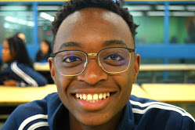

About Me
Let me tell you a few things...

BIO
I'am a 19 years old, student in health science. I have a strong and deep interest for programing. I'm looking for oppurtinity do depen my knowledge and provide value doing so!.
I love traveling
I think travelling opens your eyes about the world and the different lifestyles. It really shifts perspective. My favorite places are :
- Rwanda(my country
- Texas,United states
- I would love to visit colombia
I love reading
Reading is a way to gain someone's 20 years experience,research and experimentation in 1 or 2 weeks. My favorite books are:
- The 7 habits of highly effective people
Stephen R. Covey - How to win friends and influence people
Dale Carnegie - Rich dad poor dad
Robert Kiyosaki
I love Art
I love music! Here's a clip of me playing...hope you enjoy